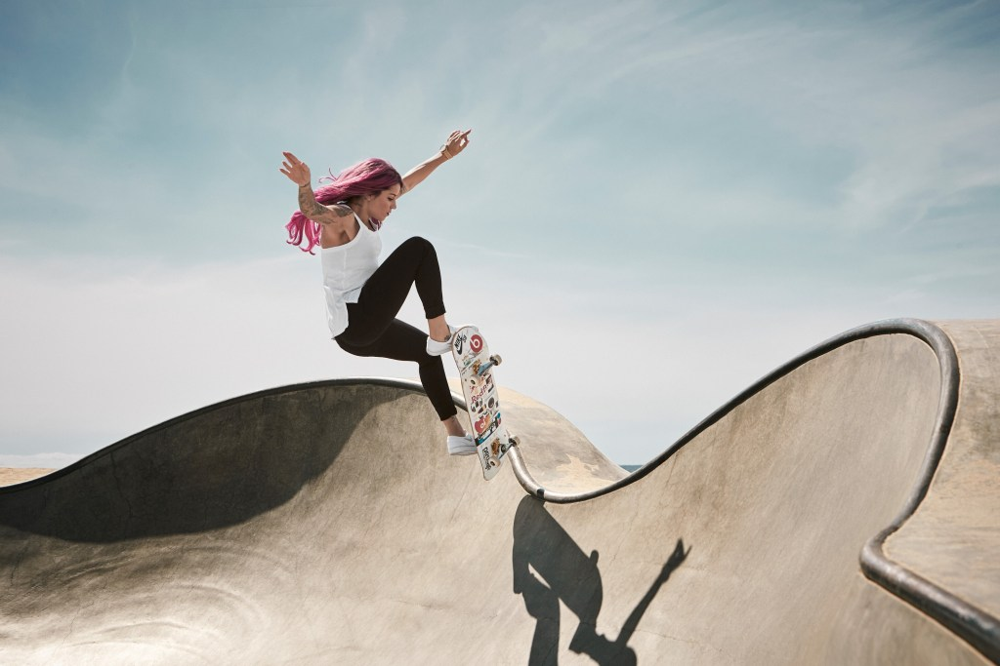

Diferença entre o Skate Street, Park e Bowl
Quem pensa que a versatilidade do skate se resume às manobras radicais, se engana. O esporte que já é uma paixão nacional, vem ganhando ainda mais adeptos após a modalidade estrear nas Olimpíadas de Tóquio. Se não bastasse a presença olímpica, a performance dos brasileiros Kelvin Hoefler e Rayssa Leal na competição despertou ainda mais o interesse pela modalidade em todo o país. O que não ficou claro para muitos simpatizantes é a diferença entre as modalidades do skate, entre elas o street, o park, o Bowl e o Vertical. Vamos a detalhar cada uma:
Skate Street
Como o próprio nome diz, a modalidade street é uma simulação de uma rua de verdade, com corrimão, escadas, rampas, bancos, entre outros. Sem dúvida, uma das mais conhecidas e praticadas no mundo. As manobras podem ser as mais variadas possíveis, de acordo com a criatividade do atleta, como flip, grind ou Ollie.

Skate Bowl
Essa é a clássica modalidade do skate, porque remete ao início do esporte, quando jovens californianos entravam em piscinas vazias para fazer altas manobras e movimentos que lembram o surf, só que no concreto.
Skate Park
O park é uma mistura do skate bowl com o street. Então, na pista você encontra half pipes e elementos parecidos com o street para execução de manobras. Nas competições, cada atleta tem 45 segundos para executar a sua linha.